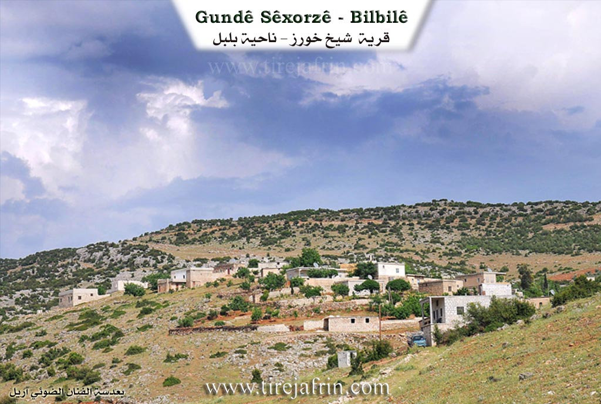

General Information
Nahiya (Subdistrict)
Bilbilê
Also Known As
Şexorze, Şêxorz, شيخ خروز, شيخ خوروس, خراب الشمس, شيخورزه جيرن, شيخورزه اورتي, شيخورزه جورن
Tribes
Roşkî
Families, Clans, etc.
Cebo, Feqe, Hacîlar, Hisê, Kelê, Memikê, Omerê Zêfê, Osê, Qirê, Reşo, Weqas, Xeltêr, Şêxlar

Photos


Basic Information about Şêxorz
Source: Ax û Welat
Etymology: The name Şêxûrzê derives from a local grape variety called Xoriz combined with the word Şêx added by the Ottomans. The upper village is called Korê due to its exposure to geese and north winds, while the middle village is Salko because of its historical dairy production.
Foundation Date/Period: The area has ancient roots in the Hurrian and Roman periods. The current village site has been continuously inhabited for over 900 years.
Springs: Kaniya Sorkê
Hills: Çiyayê Şêxûrzê, Çiyayê Parsê, Çiyayê Keleşêr, Çiyayê Reş, Çiyayê Hesen, Çiyayê Zinarê Kelê
Shrines: Nebî Hûrî, Şêx Hûrû
Ruins: Kela Hûrî, Kela Ezazê
Wells: Bîra Şêxor
Other Landmarks: Geliyê Pîrê, Geliyê Çirîk, Deşta Maziye, Deşta Ebîdanê, Baflûn, Qitmê
Summaries
I. Summary from TirejAfrin Site (English) of Şêxorz
Villages of Bilbilê District / bilbile
Sheikh Khorws (شيخ خوروس) - Şêxorz
===
According to the book 'Mountain of the Kurds (Afrin)' Geographical Study:
Şêxorz, Sheikh Khorz (شيخ خورز), Sheikh Khroz (شيخ خروز) /2770n - 1180ha - 5km - 640m/:
- A compound name consisting of Sheikh: a religious title given to a tomb at the bottom of the old Roman tower south of Cyrrhus city "Nabi Huri" (نبي هوري), and historical sources mention that it belongs to a Roman commander. When the city was ruined, the inhabitants preserved the sanctity of the tomb and tower site, then over time and through generations, it became a shrine then a mosque, and was given the title Sheikh. Khorz: One of the names by which Cyrrhus city was known in different periods, such as: Korsh, Korosh, Qorsh, Qors, Khorws, Nabi Huri and finally "Khorz". In Kurdish language rules, two silent similar consonants do not meet in one word. Therefore, when the two words, Sheikh and Khorz, were merged, it became Sheikhz. Since the current Sheikhz village is the closest to that blessed archaeological site, the village became known by that name.
Thus, the name is definitely not from the name Khorouz: meaning rooster in Turkish, as the village and its name predate the arrival of the Turks to this region by much.
- A large village consisting of three parts, western, central and eastern. It is distributed on the northern slope of a mountain chain called by its name. The village was built on three mountain protrusions extending over more than 1km. It was an important center for the Muridi movement in the 1930s. It is located near the famous Cyrrhus "Nabi Huri" city in history.
According to the book 'Afrin.... Its River and Green Hills':
Sheikh Khorz (شيخ خورز): A village in the Jabal al-Akrad (جبل الكرد) belonging to Bilbilê district, Afrin region, Aleppo Governorate.
It is a medium-sized village built on a rocky plateau on the southeastern slope of a limestone mountain located in the middle of the central-northern part of the mentioned mountain massif. It is surrounded by streams that feed Cirqa valley to its south. It is 20km from Bilbilê town in the southwestern direction. It overlooks from the southwest and west its agricultural lands with clay soil. It is bordered to the north by a rugged mountain chain of rocks and oak trees and Kurzêl village, to the south by a slope and the Reco - Kotana road and Ģazira village nearby at 500m distance, to the west by a stream valley and a mountain chain and Kela village, and to the east by a rugged mountain chain and Kotana village. The number of its houses is 50 houses and its age is about 300 years. Its old dwellings are stone-clay with flat wooden roofs, and the modern ones are cement that extended toward the southeast and are increasing. It has an electricity network and an elementary school and a modern olive press. The village drinks from artesian wells and from cistern water that collects rainwater. Most of its inhabitants work in cultivating olives, grains and vineyards in dry farming on an area of 200 hectares, in addition to raising sheep and goats. It connects to Bilbilê town by a paved road and a road passes near it to Reco town.
Village mayor: Ayoub Hassan Horik (أيوب حسن هوريك)
II. Summary of Şêxorz from Ax û Welat
Source: https://www.youtube.com/watch?v=I8vcVSuMH0Y
The documentary explores Şêxûrzê, a historically rich settlement located in the Bilbilê district of the Efrîn region. Şêxûrzê actually consists of three interconnected villages: Şêxûrziya Jêrîn, Salko which is the middle village, and Korê which is the upper village. The local elder Mihemed Elî explains that Korê earned its name because of its exposure to strong north winds, while Salko was named for its historical dairy and cheese production. The overarching name Şêxûrzê derives from a specific local grape variety called Xoriz, to which the Ottomans later added the title Şêx.
The history of Şêxûrzê stretches back thousands of years. During the ancient era, the area was populated by the Hurrians and was closely linked to the fortress of Kela Hûrî and the shrine of Nebî Hûrî. Later, under Roman rule, the village was known as Sîrûs. The current village site has been inhabited for over 900 years. The community is predominantly Kurdish and historically belonged to the Roşkî tribe. The first family to settle in the current village was the Osê family, followed closely by the Kelê family. Today, twelve main families reside across the three parts of the village, including Omerê Zêfê, Memikê, Cebo, Hacîlar, Hisê, Reşo, Şêxlar, Feqe, Xeltêr, Qirê, and Weqas.
Şêxûrzê has a strong legacy of resistance. In 1936, a localized rebellion against the French mandate began. By 1939, local men traveled to Çiyayê Parsê near Ezazê, Baflûn, and Qitmê to fight French forces. In retaliation, French warplanes bombed the lower village. The villagers refused to surrender and temporarily fled across the border to Bakurê Kurdistanê in Tirkiyê. They returned to rebuild their lives months later. Decades later, starting in 1981, the PKK entered the village, and many residents eventually joined the YPG and YPJ, resulting in sixteen martyrs from the community.
Geographically, the village is surrounded by significant landmarks. To the east lie Çiyayê Keleşêr, Çiyayê Reş, and the Kaniya Sorkê valley. To the south are Çiyayê Hesen and the Çirîk valley, while Çiyayê Zinarê Kelê sits to the west. The landscape is dominated by olive groves and vineyards. The village is especially famous for making traditional grape molasses and handmade vermicelli called şeîriyê.
Historically, the village was a central educational hub for the surrounding region. Its primary school, established in the late 1930s, served students from over ten neighboring villages, including Heftêr, Ebidan, Sariya, Nîca, Diraqliya, and Kurdo. Culturally, Şêxûrzê was renowned for its vibrant traditional weddings, where the bride would be paraded through the village on a horse, and skilled dancers like Cemîlê Qender and Mihemedê Îmir led lively folk dances. Furthermore, members of the Şêxlar family maintain a spiritual tradition, gathering on Friday evenings to perform dhikr associated with the Rîfaî and Ebdulqadir Geylanî Sufi orders, honoring local spiritual figures like Şêx Hûrû.
II. Ax û Walat Book 1
193
THE VILLAGE OF ŞÊXORZÊ
17.05.2016
The village of Şexorzê, with its three parts, is affiliated with the Bilbilê district of Efrîn canton, located approximately 7 km southeast of the town of Bilbilê and 45 km north of the city of Efrîn. The village was built in a historical area known as (Sîros), and from its ruins, it is clear that it was the site of an ancient city connected to the Fortress of Horî.
The name of the village, Şêxorzê, comes from the name of a type of grape called (Xoriz) for which the village is famous, and during the Ottoman era, the name (Şêx) was added to it, becoming (Şêxorz).
194
The village of Şêxorzê consists of 3 parts, but they have now merged and become one village:
- Lower Şêxorza is known by the name (Şêxorzê).
- Middle Şêxorza is known by the name (Salka).
- Upper Şêxorz is known by the name (Gundê Kurê).
The Mirûdan people used to say this about the mountains of Şêxorzê: (The mountains of Şêxorzê are the side of death), thus the people of Şêxorzê are known for their generosity and bravery.
The first family to settle in the village was the family of (Osê) from the ROJKÎ tribe, the majority of which lives around Betlîs. The Osê family first settled in Lower Şêxorza, then the (Kêler) family came, and thus the village became populated and expanded.
Now, in all three parts of the village, there are 12 families:
The families of Omerê Sefê, Me’mkê, Çepo, Kelêr, Hecîler, Hisê, Reşo, Şêxler, Fêqe, Xeltêr, Qirê and the family of Weqês.
It is worth mentioning that some people from the village of Şêxorzê are founders of the village of Heftêr and live there, and to this day, the graves of both villages are one.
More than 200 houses and nearly 4500 people live in all three parts of the village.
To the north of Şêxorzê are the villages of Jarê and Topel, to the east are the Keleşêr mountain and the Horî Fortress, which is about 5 km away from the village, to the
195
south are the villages of Qizilbaşa and Duriqliya, and to the west are the villages of Qurta and Qestelê.
There are many mountains around the village:
The Reş mountain is to the east of the village, the Hesen mountain is to the south, and the (Zinarê Kelê) mountain is to the west. There are also many valleys and ravines that surround the village:
The Pîrê valley is to the north, the (Kanî Sorkê) valley is to the east, and the Çirîk valley is to the south. But to the north of the village are the Maziyê Plain and to the east the Ebîdanê Plain. Both plains are adorned with olive and vine fields.
The Şêxorzê well is about 100 meters to the north of the village. Shepherds water their flocks from it, and sometimes the villagers draw water from it with tractors for household needs.
The villagers make their living from agriculture, from cultivating and servicing the fields of vines and olives along with various fruit trees, but due to the lack of water in the village, vegetable gardens are not planted.
Some families also own livestock such as sheep and goats, and they sell their products in the surrounding villages. Several families also keep bees for a living in addition to farming.
There is a shoe factory in the village that provides job opportunities for 25 people, and some people also work in the village of Qestelê and in
196
the city of Efrîn in factories, trade, and services. It is also worth noting that nearly 20 people are employees in the institutions and bodies of the Democratic Autonomous Administration.
It is worth mentioning that the village school is very old; it was built in 1948, and many people not only from Şêxorzê but from all the surrounding villages have studied there.
In 1939, a great resistance by the village youth took place against the French on Parsê mountain, and as a result, French planes bombed the village, and the people were forced to become refugees. Later, a military barracks was built in the village by the Syrian state.
There are 16 martyrs from the village who died in the National Liberation Struggle:
Ş. Avdar Elî, Hawar, Mêrxas, Rojhat, Avdar Mihemed, Fîdekar, Peyman, Fîras, Hawar, Zagros, Berxwedan, Elî Amanos, Zêneb Çawîş, Xelîl, Decle, Tolhildan and Henan Mamo who died under torture by the Syrian regime.
In the village, there is a mosque, an old olive press, 5 modern olive presses, a grape press, and a primary school.
197
There are many intellectuals in the village, and more than 50 people have graduated from universities in various fields, along with a large number who have completed institute and preparatory studies. A writer named (Hisên Kalo) has written a book in Arabic about the Kurds titled (The Kurds.. the past and their future).
Şêxorzê is also a village of artists and singers, including the tembûr player of renown (Şe’ban Sebrî) who has contributed greatly to the development of Kurdish art and music, and the artist (Semîr Îbrahîm), a member of the Artists' Union of Efrîn Canton, who has released many songs and albums.
There are 3 communes in the village named: the Commune of Ş. Avdar, the Commune of Ş. Xelî and the Commune of Ş. Mêrxas and Decle.
Transcriptions and Subtitles
| Source | Video | Subtitles | Transcript |
|---|---|---|---|
| Ax û Welat 1 | Watch Video | Download SRT | View Transcript |
Foundation/Origin Information of Şêxorz
It was an important center for the Muridi movement in the 1930s.
Source: TirejAfrin Site
Possible Village Name Meaning of Şêxorz
A compound name consisting of Sheikh: a religious title given to a tomb at the bottom of the old Roman tower south of Cyrrhus city "Nabi Huri". Khorz: One of the names by which Cyrrhus city was known in different periods. The name is definitely not from the name Khorouz: meaning rooster in Turkish.
Source: TirejAfrin Site